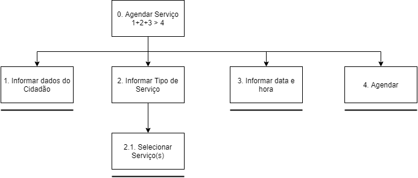

Análise Hierarquica de Tarefas
1. Introdução
Uma análise de tarefas é utilizada para se ter um entendimento sobre qual é o trabalho dos usuários, como eles o realizam e por quê. Nesse tipo de análise, o trabalho é definido em termos dos objetivos que os usuários querem ou precisam atingir (Barbosa S.; Silva, B. 2021).
2. O Método
A Análise Hierárquica de Tarefas (HTA – Hierarchical Task Analysis) foi criada para entender habilidades e competências exibidas em tarefas não repetitivas e complexas, e ajudar na identificação de problemas de desempenho. Relaciona o motivo, como e consequências das ações dos usuários. Baseada na psicologia funcional. A HTA examina os objetivos de alto nível decompondo-os em subobjetivos, com a intenção de encontrar subobjetivos que limitem o alcance de objetivos maiores.
Elementos de um diagrama HTA:
- Objetivo;
- Operação;
- Relações;
- Plano.
3. Resultados
HTA01: Agendar Serviço
Diagrama HTA

{kind=link}
Tabela HTA
| Objetivo/Operações | Problemas e Recomendações |
|---|---|
| 0. Agendar Serviço |
plano: informar os dados e agendar serviço. |
| 1. Informar dados do Cidadão | ação: informar CPF, E-mail, Nome e Telefone. input: formulário com dados do cidadão, dados do agendamento e data e hora. |
| 2. Informar Tipo de Serviço | ação: selecionar Tipo de Serviço problema: serviços indisponíveis |
| 2.1 Selecionar Serviço(s) | ação: selecionar os serviços desejados |
| 3. Informar data e hora | ação: informar dia do atendimento e horário do atendimento. problema: somente alguns dias e horários disponíveis. |
| 4. Agendar | ação: apertar botão de agendar. |
HTA02: Consultar Débitos Veículo
Diagrama HTA

{kind=link}
Tabela HTA
| Objetivo/Operações | Problemas e Recomendações |
|---|---|
| 0. Consultar Débitos Veículo |
input: formulário com placa e renavam do veículo. plano: Consultar todos os débitos do veículo. |
| 1. Informar placa e renavam | ação: Informar placa e renavam. |
| 2. reCAPTCHA | ação: clicar em "Não sou um robô" |
| 3. Consultar | ação: clicar em Consultar |
| 3.1 Emitir boleto de débito | ação: clicar no botão Emitir do débito correspondente |
HTA03: Solicitar CHN Definitiva
Diagrama HTA

{kind=link}
Tabela HTA
| Objetivo/Operações | Problemas e Recomendações |
|---|---|
| 0. Solicitar CNH Definitiva |
plano: obter borderô de taxa de troca de habilitação. |
| 1. Preencher formulário | ação: informar código da imagem, número de registro, nome e data de nascimento. input: formulário com código, registro, nome e data de nascimento. problema: é preciso recarregar a página para o formulário ficar visível. recomendação1: incorporar formulário ao HTML da página. recomendação2: seguir guia de estilo do site/sistema. |
| 2. Enviar | ação: clicar no botão enviar |
| 2.1 Baixar borderô | ação: baixar borderô |
HTA04: Transferir propriedade de um veículo
Diagrama HTA

{kind=link}
Tabela HTA
| Objetivo/Operações | Problemas e Recomendações |
|---|---|
| 0. Tranferir a propriedade de um veículo |
plano: realizar vistoria para transferir a propriedade do veículo. problema: site usado para realizar a ação é um diferente do Detran-DF e seu portal, adicionando assim mais um site ao caminho |
| 1. Agendar Vistoria do Veículo | ação: entrar na área de agendamento de serviços e agendar a vistoria. input: formulário com placa, renavam e captcha. problema: é preciso voltar ao portal para assim selecionar a opção de realizar vistoria. recomendação1: colocar um link que redirecionará o usuário para a área de agendamento de serviços. |
| 1.1 Realizar Vistoria | ação: Realizar Vistoria presencialmente em uma unidade do Detran-DF |
| 2. Informar dados do Veiculo | ação: preencher formulário com dados do veículo |
| 2.1 Informar placa, renavam e responder o Captcha | ação: informar a placa e renavam do veículo e responder o Captcha |
| 3. Pagar Dívidas Ativas do Veículo |
ação: Verificar se há dividas referentes ao veículo, se sim, efetuar o pagamento |
| 3.1 Emitir boleto de pagamento | ação: emitir boleto para o pagamento da dívida e realiza-lo |
| 3.2 Acessar site da receita Federal caso a dívida seja o IPVA | ação: Acessar o site da Receita Federal para obter o boleto de pagamento do IPVA |
| 4 Agendamento da transferência da propriedade do veículo | ação: Realizar o agendamento/informativo da transferência de propriedade do veículo |
| 4.1 Confirmação do agendamento | ação: confirmar e realizar a transferência do veículo |
HTA05: Agendamento de Biometria
Diagrama HTA

{kind=link}
Tabela HTA
| Objetivo/Operações | Problemas e Recomendações |
|---|---|
| 0. Agendamento de Biometria |
plano: Agendar o cadastro de Biometria em um posto de atendimento do Detran-DF problema: O site utilizado para o agendamento da biometria é outro além dos já citados, com cadastro próprio. |
| 1. Entrar ou cadastrar-se |
ação: Acessar o site de realização do agendamento de biometria problema: cadastro próprio do site. recomendação: Usar o cadastro do portal de serviços do Detran-DF |
| 1.1 Inserir CPF e senha para entrar | ação: inserir CPF e Senha para login no site input: CPF e senha |
| 1.2 Se cadastrar | ação: realizar cadastro no site para efetuar o agendamento. |
| 2. Clicar em novo agendamento | ação: clicar em novo agendamento para segui para página desejada. |
| 2.1 Inserir dados para o agendamento | ação: escolher o posto de atendimento, a data de agendamento e o horário de agendamento input: local de agendamento, data do agendamento e horario do agendamento |
| 3. Clicar em cadastrar | ação: clicar em "cadastrar" para finalizar o agendamento. |
HTA06: Acessar informações
Diagrama HTA

{kind=link}
Tabela HTA
| Objetivo/Operações | Problemas e Recomendações |
|---|---|
| 0. Acessar Informações |
plano: obter as informações desejadas no site do Detran-DF. |
| 1. Escolher categoria pela barra superior | ação: Escolher categoria desejada pela barra de superior de seleção. |
| 1.1 Escolher a página de informação dentro da categoria | ação: escolher informação dentro das categorias mostradas após escolha na barra superior problema: Muitas escolhas. recomendação: Deixar a escolha de temas e categorias mais intuitivas e auxiliar o usuário nessa escolha. |
| 2. Escolher a informação rolando a página | ação: Escolher a informação desejada após rolar o site. problema: Página muito poluída visualmente, ocasionando confusão ao usuário recomendação: usar de um design mais minimalista para mostrar as informações de destaque |
| 3. Pesquisar a informação | ação: Pesquisar pela informação desejada usado a barra de pesquisa do site. input: palavra-chave para pesquisa. problema: Se a informação for uma funcionalidade do site e não uma noticia a pesquisa responde com informações erradas. recomendação: incluir páginas referentes á funcionalidades ofertadas pelo sítio nos resultados de pesquisa. |
Referências bibliográficas
Barbosa, S. D. J.; Silva, B. S. da; Silveira, M. S.; Gasparini, I.; Darin, T.; Barbosa, G. D. J. (2021) Interação Humano-Computador e Experiência do usuário. Autopublicação.
Versionamento
| Versão | Data | Modificação | Autor |
|---|---|---|---|
| 1.0 | 23/08/2021 | Criação do documento | Carlos e Matheus |
| 1.1 | 23/08/2021 | Adição dos resultados | Carlos e Matheus |
| 1.2 | 26/08/2021 | Correção de diagramas e adição de novos | Carlos e Matheus |